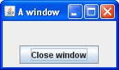

How to Make Frames (Main Windows)
A Frame is a top-level window with a title and a border. The size of the frame includes any area designated for the border. The dimensions of the border area may be obtained using the getInsets method. Since the border area is included in the overall size of the frame, the border effectively obscures a portion of the frame, constraining the area available for rendering and/or displaying subcomponents to the rectangle which has an upper-left corner location of (insets.left, insets.top), and has a size of width - (insets.left + insets.right) by height - (insets.top + insets.bottom).
A frame, implemented as an instance of the
JFrame class,
is a window that has decorations such as a border, a title,
and supports button components that close or iconify the window.
Applications with a GUI usually include at least one frame.
Applets sometimes use frames, as well.
To make a window that is dependent on another window —
disappearing when the other window is iconified, for example —
use a dialog
instead of frame..
To make a window that appears within another window,
use an internal frame.
Creating and Showing Frames
Here is a picture of the extremely plain window
created by the FrameDemo demonstration application.
You can find the source code in
FrameDemo.java.
You can
run FrameDemo (
download JDK 6).

FrameDemo code shows how to create and set up a frame.
//1. Create the frame.
JFrame frame = new JFrame("FrameDemo");
//2. Optional: What happens when the frame closes?
frame.setDefaultCloseOperation(JFrame.EXIT_ON_CLOSE);
//3. Create components and put them in the frame.
//...create emptyLabel...
frame.getContentPane().add(emptyLabel, BorderLayout.CENTER);
//4. Size the frame.
frame.pack();
//5. Show it.
frame.setVisible(true);
-
The first line of code creates a frame using a
constructor that lets you set the frame title.
The other frequently used
JFrameconstructor is the no-argument constructor. -
Next the code specifies
what happens when your user closes the frame.
The
EXIT_ON_CLOSEoperation exits the program when your user closes the frame. This behavior is appropriate for this program because the program has only one frame, and closing the frame makes the program useless.See Responding to Window-Closing Events for more information.
-
The next bit of code adds a blank label to the frame content pane.
If you're not already familiar with content panes
and how to add components to them,
please read
Adding Components to the Content Pane.
For frames that have menus, you'd typically add the menu bar to the frame here using the
setJMenuBarmethod. See How to Use Menus for details. -
The
packmethod sizes the frame so that all its contents are at or above their preferred sizes. An alternative topackis to establish a frame size explicitly by callingsetSizeorsetBounds(which also sets the frame location). In general, usingpackis preferable to callingsetSize, sincepackleaves the frame layout manager in charge of the frame size, and layout managers are good at adjusting to platform dependencies and other factors that affect component size.This example does not set the frame location, but it is easy to do so using either the
setLocationRelativeToorsetLocationmethod. For example, the following code centers a frame onscreen:frame.setLocationRelativeTo(null);
-
Calling
setVisible(true)makes the frame appear onscreen. Sometimes you might see theshowmethod used instead. The two usages are equivalent, but we usesetVisible(true)for consistency's sake.
Specifying Window Decorations
By default, window decorations are supplied by the native window system. However, you can request that the look-and-feel provide the decorations for a frame. You can also specify that the frame have no window decorations at all, a feature that can be used on its own, or to provide your own decorations, or with full-screen exclusive mode.Besides specifying who provides the window decorations, you can also specify which icon is used to represent the window. Exactly how this icon is used depends on the window system or look and feel that provides the window decorations. If the window system supports minimization, then the icon is used to represent the minimized window. Most window systems or look and feels also display the icon in the window decorations. A typical icon size is 16x16 pixels, but some window systems use other sizes.
The following snapshots show three frames that are identical except for their window decorations. As you can tell by the appearance of the button in each frame, all three use the Java look and feel. The first uses decorations provided by the window system, which happen to be Microsoft Windows, but could as easily be any other system running the Java platform.The second and third use window decorations provided by the Java look and feel. The third frame uses Java look and feel window decorations, but has a custom icon.
|  |
 |
|
| Window decorations provided by the look and feel | Window decorations provided by the window system | Custom icon; window decorations provided by the look and feel |
Here is an example of creating a frame with a custom icon and with window decorations provided by the look and feel:
//Ask for window decorations provided by the look and feel.
JFrame.setDefaultLookAndFeelDecorated(true);
//Create the frame.
JFrame frame = new JFrame("A window");
//Set the frame icon to an image loaded from a file.
frame.setIconImage(new ImageIcon(imgURL).getImage());
As the preceding code snippet implies,
you must invoke the setDefaultLookAndFeelDecorated method
before creating the frame
whose decorations you wish to affect.
The value you set with setDefaultLookAndFeelDecorated
is used for all subsequently created JFrames.
You can switch back to using window system decorations
by invoking JFrame.setDefaultLookAndFeelDecorated(false).
Some look and feels might not support window decorations;
in this case, the window system decorations are used.
The full source code for the application
that creates the frames pictured above is in
FrameDemo2.java.
Besides showing how to choose window decorations,
FrameDemo2 also shows how to disable all window decorations
and gives an example of positioning windows.
It includes two methods that create the Image objects
used as icons —
one is loaded from a file,
and the other is painted from scratch.
Try this::
- Click the Launch button to run the Frame Demo using
Java™ Web Start (download JDK 6).
Alternatively, to compile and run the example yourself,
consult the
example index.

- Bring up two windows, both with look-and-feel-provided decorations,
but with different icons.
The Java look and feel displays the icons in its window decorations. Depending on your window system, the icon may be used elsewhere to represent the window, especially when the window is minimized. - Bring up one or more windows with window system decorations.
See if your window system treats these icons differently. - Bring up one or more windows with no window decorations.
Play with the various types of windows to see how the window decorations, window system, and frame icons interact.
Responding to Window-Closing Events
By default, when the user closes a frame onscreen, the frame is hidden. Although invisible, the frame still exists and the program can make it visible again. If you want different behavior, then you need to either register a window listener that handles window-closing events, or you need to specify default close behavior using thesetDefaultCloseOperation method.
You can even do both.
The argument to setDefaultCloseOperation
must be one of the following values,
the first three of which are defined in the
WindowConstants interface
(implemented by JFrame,
JInternalPane,
and JDialog):
DO_NOTHING_ON_CLOSE- Do not do anything when the user requests that the window close.
Instead, the program should probably use a window listener
that performs some other action in its
windowClosingmethod. HIDE_ON_CLOSE(the default forJDialogandJFrame)- Hide the window when the user closes it. This removes the window from the screen but leaves it displayable.
DISPOSE_ON_CLOSE(the default forJInternalFrame)- Hide and dispose of the window when the user closes it. This removes the window from the screen and frees up any resources used by it.
EXIT_ON_CLOSE(defined in theJFrameclass)- Exit the application, using
System.exit(0). This is recommended for applications only. If used within an applet, aSecurityExceptionmay be thrown.
Note:
DISPOSE_ON_CLOSE can have results similar to
EXIT_ON_CLOSE if only one window is onscreen.
More precisely, when the last displayable window
within the Java virtual machine (VM) is disposed of,
the VM may terminate.
See
AWT Threading Issues for details.
For more information about handling window-closing events, see How to Write Window Listeners. Besides handling window-closing events, window listeners can also react to other window state changes, such as iconification and activation.
The Frame API
The following tables list the commonly usedJFrame constructors and methods.
Other methods you might want to call
are defined by the
java.awt.Frame,
java.awt.Window, and
java.awt.Component classes,
from which JFrame descends.
Because each JFrame object has a root pane,
frames have support for interposing input and painting behavior
in front of the frame children, placing children on different "layers",
and for Swing menu bars.
These topics are introduced in
Using Top-Level Containers
and explained in detail in
How to Use Root Panes.
The API for using frames falls into these categories:
- Creating and Setting Up a Frame
- Setting the Window Size and Location
- Methods Related to the Root Pane
| Method or Constructor | Purpose |
|---|---|
|
JFrame() JFrame(String) |
Create a frame that is initially invisible.
The String argument provides a title for the frame.
To make the frame visible,
invoke setVisible(true) on it.
|
|
void setDefaultCloseOperation(int) int getDefaultCloseOperation() |
Set or get the operation that occurs when the user pushes
the close button on this frame. Possible choices are:
WindowConstants interface, which JFrame implements.
The EXIT_ON_CLOSE constant is defined in
the
JFrame class.
|
|
void setIconImage(Image) Image getIconImage() (in Frame)
|
Set or get the icon that represents the frame.
Note that the argument is a
java.awt.Image object, not a javax.swing.ImageIcon
(or any other javax.swing.Icon implementation).
|
|
void setTitle(String) String getTitle() (in Frame)
|
Set or get the frame title. |
|
void setUndecorated(boolean) boolean isUndecorated() (in Frame)
|
Set or get whether this frame should be decorated. Works only if the frame is not yet displayable (has not been packed or shown). Typically used with full-screen exclusive mode or to enable custom window decorations. |
|
static void setDefaultLookAndFeelDecorated(boolean) static boolean isDefaultLookAndFeelDecorated() |
Determine whether subsequently created JFrames
should have their Window decorations (such as borders, and widgets for
closing the window) provided by the current
look-and-feel. Note that this is only a hint, as some look and
feels may not support this feature.
|
| Method | Purpose |
|---|---|
|
void pack() (in Window)
|
Size the window so that all its contents are at or above their preferred sizes. |
|
void setSize(int, int) void setSize(Dimension) Dimension getSize() (in Component)
|
Set or get the total size of the window.
The integer arguments to setSize specify the width and height,
respectively.
|
|
void setBounds(int, int, int, int) void setBounds(Rectangle) Rectangle getBounds() (in Component)
|
Set or get the size and position of the window.
For the integer version of setBounds,
the window upper left corner is at the x, y location
specified by the first two arguments,
and has the width and height
specified by the last two arguments.
|
|
void setLocation(int, int) Point getLocation() (in Component)
|
Set or get the location of the upper left corner of the window. The parameters are the x and y values, respectively. |
|
void setLocationRelativeTo(Component) (in Window)
|
Position the window
so that it is centered over the specified component.
If the argument is null,
the window is centered onscreen.
To properly center the window,
you should invoke this method after the window size has been set.
|
| Method | Purpose |
|---|---|
|
void setContentPane(Container) Container getContentPane() |
Set or get the frame content pane. The content pane contains the visible GUI components within the frame. |
|
JRootPane createRootPane() void setRootPane(JRootPane) JRootPane getRootPane() |
Create, set, or get the frame root pane. The root pane manages the interior of the frame including the content pane, the glass pane, and so on. |
|
void setJMenuBar(JMenuBar) JMenuBar getJMenuBar() |
Set or get the frame menu bar to manage a set of menus for the frame. |
|
void setGlassPane(Component) Component getGlassPane() |
Set or get the frame glass pane. You can use the glass pane to intercept mouse events or paint on top of your program GUI. |
|
void setLayeredPane(JLayeredPane) JLayeredPane getLayeredPane() |
Set or get the frame layered pane. You can use the frame layered pane to put components on top of or behind other components. |
Examples that Use Frames
All of the standalone applications in this trail useJFrame.
The following table lists a few
and tells you where each is discussed.
| Example | Where Described | Notes |
|---|---|---|
FrameDemo
|
The Example Explained | Displays a basic frame with one component. |
FrameDemo2
|
Specifying Window Decorations | Lets you create frames with various window decorations. |
Framework
|
— | A study in creating and destroying windows, in implementing a menu bar, and in exiting an application. |
LayeredPaneDemo
|
How to Use Layered Panes | Illustrates how to use a layered pane (but not the frame layered pane). |
GlassPaneDemo
|
The Glass Pane | Illustrates the use of a frame glass pane. |
MenuDemo
|
How to Use Menus | Shows how to put a JMenuBar in a JFrame.
|